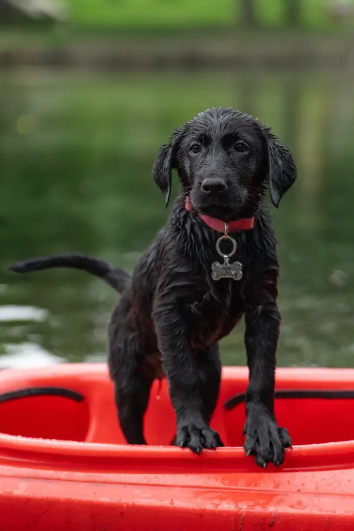

Polar Pets on hyvin varusteltu ja luotettava eläinklinikka ja lemmikkihotelli
Tervetuloa Polar Petsiin, meille lemmikkisi hyvinvointi on kaiken keskiössä. Tarjoamme saman katon alla kattavat eläinlääkäripalvelut, viihtyisän ja turvallisen lemmikkihotellin sekä ammattitaitoisen trimmauspalvelun. Meille jokainen lemmikki on yksilö, ja huolehdimme heistä lempeästi, asiantuntevasti ja sydämellä. Olipa kyse sitten terveydestä, hoidosta tai hemmottelusta.
